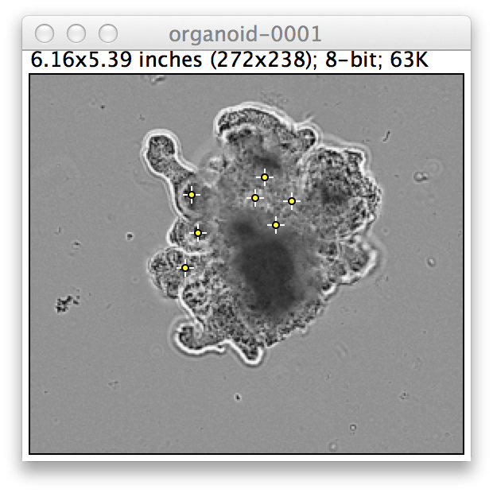

Before getting started please make sure you do the following.
- Open Fiji by typing 'Fiji' into the terminal of the linux workstation. You can find the Terminal by searching for it or by the short-cut: 'Ctrl + Alt + T'.
- In Fiji goto Analyze->Set Measurements. Make sure at least Area, Mean Gray, value are checked.
- In Fiji Edit->Options->Color, please make sure that Foreground=Black, Background=White and Selection=Yellow.
- Goto the folder entitled: "day4_machineLearning" you will need the files in this folder.
1a) Using Fiji open the image entitled: 'organoid.tif'. An image-stack should load with three frames. Navigate through this image and observe how the location of the 'organoid' shifts abruptly between frames due to problems during the microscopy acquisition. The goal of this practical is to correct the drift by using a feature detector. A feature detector varies from feature description because out of all the pixels in the image the feature detector automatically picks the ones which it can recognise with a large degree of certainty. It recognises them by inspecting the pixel and its local environment and picks pixels which are unique. For more details: http://homepages.inf.ed.ac.uk/rbf/CVonline/LOCAL_COPIES/AV0405/MURRAY/SIFT.html
1b) Split this stack into individual images using the Image->Stacks->Stack to Images command. We are going to find the common features firstly between image 'organoid-0001' and 'organoid-0002'. To do this use the SIFT feature detector Plugins->Feature Extraction->Extract SIFT Correspondences. Set the source image to be 'organoid-0001' and the target image to be 'organoid-0002'. You can leave the rest of the settings for now and press 'OK' to process. You should notice that a number of points appear on these two images. These points correspond to pixel locations which the algorithm believes are identical in the two images. With this information we can accurately register the image in the two frames.
Figure) The above image represents something like what you should see in one of your images.
1e) With your two images you can now realign them with the points you know to be identical in the two images. Goto Plugins->Transform->Landmark Correspondences and as the source image select 'organoid-0001' and the template image select 'organoid-0002'. Press ok. You should now see that one of images has been shifted so that the landmark correspondences (points) in the two images are aligned. To test this you can use Image->Color->Merge Channels with the first two channels selected as your 'organoid....' and 'Transformedorganoid....' images. You would perform this action if you were trying to track the movement of organoids in a time-series experiment. Due to the nature of the wide-field image and the movement of the organoid they can sometimes be hard to register using conventional registration techniques
1f) The default settings find 6-7 points in each image reliably. If you go back to the SIFT plugin. See if you can increase the number of points discovered by the algorithm. The caveat is that these points must be accurate. Experiment with a few parameters, don't worry if you see no improvement. If you are successful in improving the number and maintaining the accuracy, save some screenshots of your two images and also the settings you used to achieve such fine results. A demonstrator will judge the best attempt.
(c) Dominic Waithe 2015. University of Oxford.